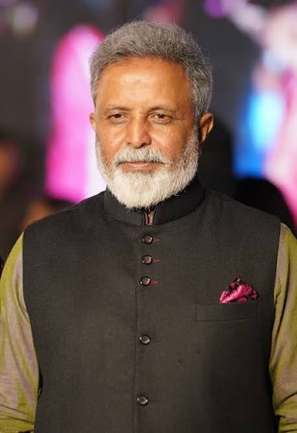
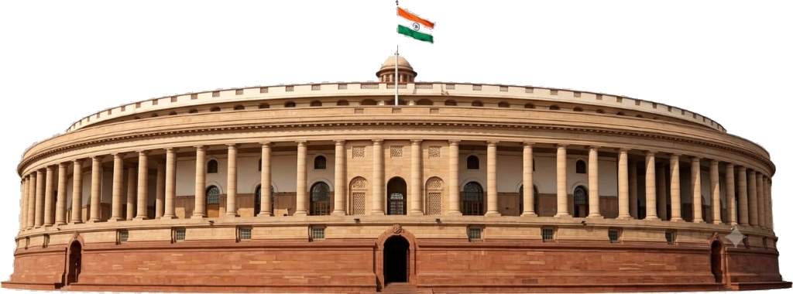

2004–2014Member of Parliament, Nizamabad

LAW · PARLIAMENT · PUBLIC LIFE
ADVOCATE FORMER MEMBER OF PARLIAMENT
Madhu Goud Yaskhi
Chairman
All India Professionals Congress (AIPC)
A public profile covering legal practice, parliamentary service, education, and current organisational responsibilities.

Two terms14th and 15th Lok Sabha
2026Assumed AIPC chairmanship
01 / ABOUT
A career across law and public service.
Madhu Goud Yaskhi is an Indian advocate and politician affiliated with the Indian National Congress. He represented Nizamabad in the Lok Sabha after elections in 2004 and 2009, serving until 2014.
His academic background includes Nizam College, legal studies at the University of Delhi, and postgraduate law studies in Hyderabad. Before entering Parliament, he worked as an attorney in New York City.
ProfessionAdvocate
Parliament14th & 15th Lok Sabha
ConstituencyNizamabad
Current roleAIPC Chairman
2004–2014Member of Parliament
for Nizamabad
for Nizamabad
PUBLIC
PROFILE
PROFILE
02 / JOURNEY
Selected public milestones.
A concise chronology based on the biographical reference provided for this project.
1982–1989
Education and law
Completed undergraduate and legal studies in Hyderabad and Delhi.
2003
Foundation work
The supplied biography dates the establishment of the Madhu Yaskhi Foundation to 2003.
2004 & 2009
Lok Sabha elections
Elected and then re-elected from the Nizamabad constituency.
2026
AIPC leadership
Appointed Chairman of the All India Professionals Congress in September 2026.
03 / AIPC
All India
Professionals Congress
This section presents the organisation and its professional-engagement themes in a neutral, informational format.
Ideas
Policy discussion, research, and professional perspectives.
Expertise
Participation from professionals across different sectors and disciplines.
Action
Organisational programmes, events, and published activity.
Public engagement
Channels for professionals to follow official information and initiatives.
04 / MEDIA
Media & public record.
Use this space for approved press coverage, speeches, photographs, or official updates supplied by the client.
PUBLIC PROFILE
FEATURED PROFILE
Leadership profile & public service
A visual introduction built from the client-provided photographs and artwork.
PARLIAMENT
Historical parliamentary service
Use this card for approved archival material or public-record links.
ORGANISATION
AIPC updates
Add verified announcements and organisational notices here.
05 / CONTACT
Connect with the office.
Reach out through the residence or the national headquarters for professional correspondence and enquiries.
ENQUIRY FORM
Send a message.
This static demo prepares a message locally; it does not transmit or store visitor information.